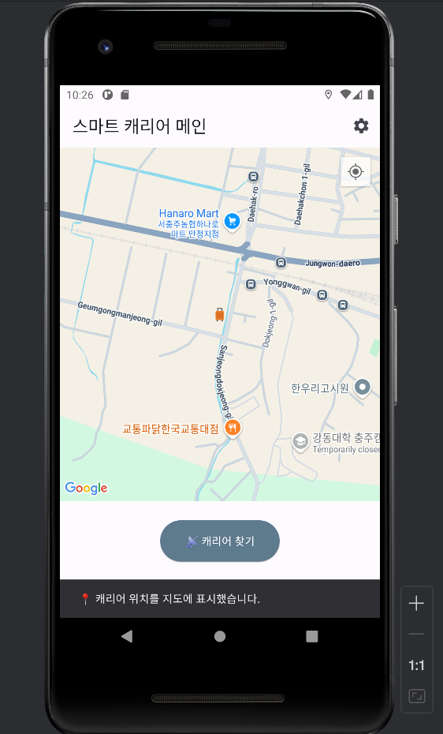

CAPSTONE · SYSTEM INTEGRATION
BLE·GPS 스마트 캐리어
ESP32의 GPS 좌표를 BLE로 Flutter 앱에 전달하고 지도·연결 상태·안전 기능을 통합했습니다.
- 기간
- 2025.03 — 2025.06
- 수행 형태
- 3인 팀
- 담당 역할
- GPS–ESP32·BLE, 지도·캐리어 찾기, SOS·설정 UI, 코드 통합·Firebase 배포
- 주요 결과
- GPS·지도·BLE 연동 · 앱 통합

담당 구현
GPS–ESP32 UART 연동, BLE 검색·연결·앱 수준 비밀번호 인증, 지도 마커·캐리어 찾기를 구현했습니다. SOS 버튼·보호자·긴급 연락처 설정과 앱 코드 통합, Firebase 배포를 담당했습니다.
통합 오류 해결
화면 초기화용 좌표와 실제 수신 좌표를 구분하고 데이터 전달 경로를 점검해 마커 미표시·캐리어 찾기 오류를 해결했습니다. BLE 연결 해제 상태와 버튼 전환도 수정했습니다.
팀 분담과 결과
스마트 알림·Safe Zone은 팀원, 기울기 기반 이동 보조와 소형 시제품은 하드웨어 팀원 담당입니다. 보호자 단말 SOS 알림 수신은 미완료이며 FCM 토큰 문제는 의심 단계로 원인이 확정되지 않았습니다.